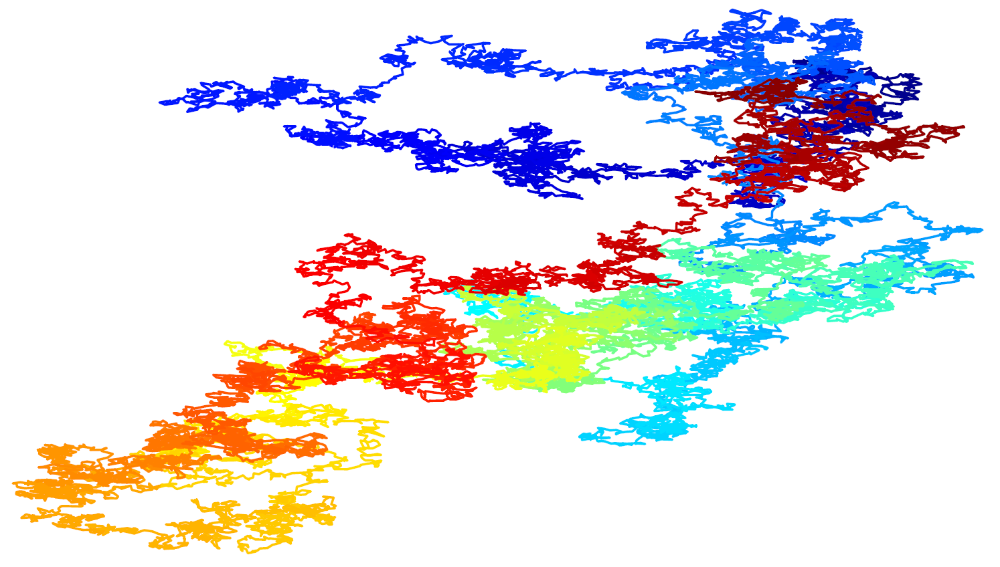

Sean Groathouse
Department of Mathematics · University of Utah
I completed my Ph.D. in Mathematics and Master of Statistics degrees in 2023 at the University of Utah. My research is in probability theory. Particularly, I study models of random growth, such as last passage percolation, and models of random walks in random potentials (random polymers). These types of randomness appear when we navigate traffic, when lightning strikes along paths of least resistance, when spilled coffee percolates through a piece of paper, or when a particle traverses a random environment. My Ph.D. advisor was Firas Rassoul-Agha. In 2015, I completed my Bachelor's degree at Westminster University with majors in computer science and mathematics. I play piano and especially like pieces by Ravel and Chopin.

Publications
- with C. Janjigian and F. Rassoul-Agha: Existence of generalized Busemann functions and Gibbs measures for random walks in random potentials. Trans. Amer. Math. Soc. To appear (2025)
- with T. Alberts, R. Basu, and X. Shen: Large deviations of geodesic midpoint fluctuations in last-passage percolation with general iid weights. arXiv:2502.00942 [math.PR]. (2025).
- with F. Rassoul-Agha, T. Seppäläinen, and E. Sorensen: Jointly invariant measures for the Kardar-Parisi-Zhang equation. Probab. Th. Rel. Fields, Online First (2025)
- with C. Janjigian and F. Rassoul-Agha: Non-existence of non-trivial bi-infinite geodesics in Geometric last passage percolation. (2021)
Teaching
- Fall 2025: Math 1070 – Intro to Statistical Inference
- Fall 2025: Math 1311 – Accelerated Engineering Calculus I
- Summer 2025: Math 3210 – Foundations of Analysis I
- Summer 2025: Math 3220 – Foundations of Analysis II
- Spring 2025: Math 2270 – Linear Algebra
- Spring 2025: Math 1220 – Calculus II
- Fall 2024: Math 2210 – Calculus III
- Fall 2024: Math 1070 – Intro to Statistical Inference
- Summer 2024: Math 2270 – Linear Algebra
- Summer 2024: Math 3070 – Applied Statistics I and R Lab I
- Spring 2024: R Lab I
- Spring 2024: R Lab II
- Fall 2023: Math 1310 – Engineering Calculus I
- Fall 2023: R Lab I
- Fall 2022: Math 1030 – Intro to Quantitative Reasoning
- Spring 2022: Math 5010/6805 – Intro to Probability
- Fall 2021: Math 5010/6805 – Intro to Probability
- Fall 2020: Math 3070 – Applied Statistics I
- Summer 2020: Math 5010/6805 – Intro to Probability
- Spring 2020: Math 1220 – Calculus II
- Summer 2019: Math 2270 – Linear Algebra
- Spring 2019: Math 1080 – Precalculus
- Fall 2018: Math 1080 – Precalculus
- Spring 2018: Math 1060 – Trigonometry